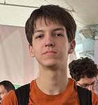
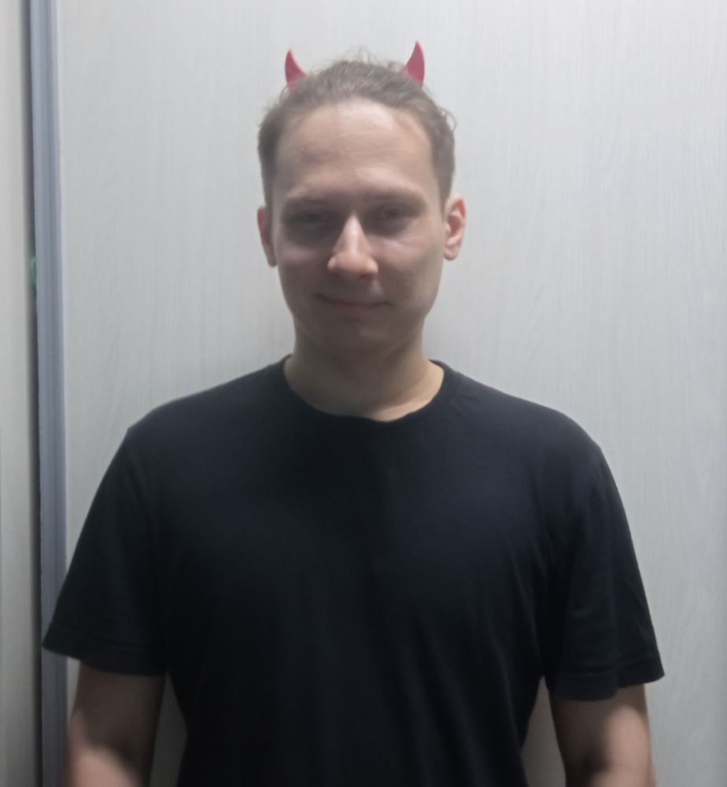

Участники проекта
- 
-

Долбышев Даниил Максимович (группа 241-336)
Роль: Работа с данными
Вклад в проект: Занимался составлением пробных баз данных для команды Фулстек-разработки, включая проектирование структуры таблиц и наполнение их тестовыми данными.
Telegram: @DaniilDolbsh
GitHub: danilstudents
Email: daniil.dolb@yandex.ru